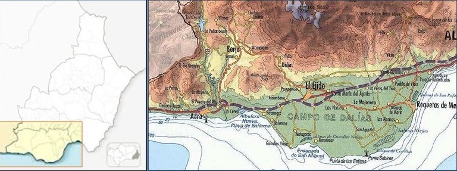
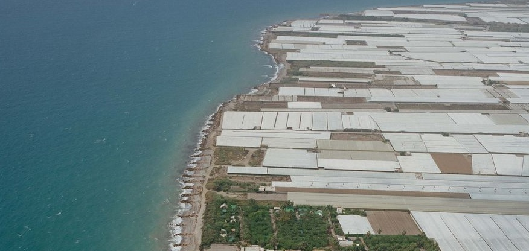

Resultado de la selección
Prueba grafica webix.js
Prueba grafica webix.js

El Poniente Almeriense es una de las siete comarcas de la provincia de Almería. Tiene una superficie de 970 km² y cuenta con 220.000 habitantes. Hasta 2015, estaba formada por nueve municipios: Roquetas de Mar, Vícar, La Mojonera, El Ejido, Adra, Dalías, Berja, Enix y Felix. Se sitúa en el suroeste de la provincia, limitado al norte por la Sierra de Gádor, por el Mar Mediterráneo al sur, al este lo hace con Almería capital y al oeste con el municipio de Albuñol (Granada).
En lo que a orografía se refiere, el Poniente Almeriense cuenta con cuatro unidades del relieve: la Sierra de Gádor, la Sierra de Adra, el Campo de Dalías y la Hoya de Adra. Tiene una altitud media de 300 m aproximadamente, pudiéndose distinguir tres franjas: una zona elevada, en la que se encuentran Felix y Enix; una zona de altitud media en la que se ubican Dalías, Berja y Vicar; y a pie de costa El Ejido, La Mojonera, Adra y Roquetas de Mar.
Geológicamente hablando, el Poniente Almeriense se enmarca dentro de la Zona Bética o Interna de las Cordilleras Béticas. Según el metamorfismo, las características estratográficas y las manifestaciones magmáticas, la Zona Bética que se encuentra en la provincia se puede dividir en tres unidades: Complejo Nevado-Filábride, Complejo Maláguide y Complejo Alpujárride, y es en éste en el que se encuentra gran parte de la superficie del Poniente Almeriense. De los tres complejos mencionados, constituye la unidad tectónica intermedia y se compone principalmente de esquistos, filitas y cuarcitas, triásicas, rocas ígneas básicas, dolomías y mármoles (Sánchez-Martos, F. et al., 2001).
En relación al clima, hay que empezar diciendo que Almería es la provincia andaluza con la configuración climatológica más compleja. A pesar de que la mayoría de la provincia disfruta de un clima mediterráneo subcontinental de inviernos fríos, Almería cuenta con un clima de montaña en las zonas de sierra (Sierra Nevada y Los Filabres), el peculiar Clima Subdesértico más al Este y el clima subtropical, propio de la Costa del Sol, en la parte más occidental. Pues bien, este último es el clima que corresponde al Poniente Almeriense, lo que junto a la elevada insolación que posee esta zona, hace que las circunstancias exógenas sean ciertamente favorables para la agricultura.
El suelo de la provincia de Almería, es el más árido de la Península: la presencia de plantas espinosas y la tonalidad de sus suelos (grises o blancos) hacen del paisaje un erial. Desde un punto de vista agrícola, estos suelos se incluyen en el grupo de los semidesérticos, que además tienen un pH elevado (8,0-8,5). Si a esto se le añade también la mala calidad del agua para el riego y la escasa fertilidad por el bajo contenido en materia orgánica, fósforo y oligoelementos (Fernández y Pizarro, 1981) hace que la agricultura sea mucho más complicada.
El sistema hídrico de esta comarca está fuertemente condicionado por la Sierra de Gádor y se caracteriza por proporcionar las condiciones idóneas para la acumulación de recursos hídricos en diversos acuíferos (Tolón y Lastra, 2010). Sin embargo, hay que decir que se trata de agua con gran cantidad de sales y un bajo contenido en sodio, lo que supone un inconveniente para el cultivo, inconvenientes que trata de evitar la técnica del enarenado (Fernández y Pizarro, 1981).
El desarrollo económico almeriense está estrechamente ligado a su agricultura. La actual agricultura intensiva de la comarca ha conseguido crear un verdadero tejido industrial y de servicios, pues cuenta con un evolucionado sistema comercial, dispone de mano de obra más cualificada y un marco europeo más favorable (Instituto de Estudios de Cajamar, 2004).
El desarrollo de esta agricultura hortofrutícola intensiva fue posible gracias a la combinación de dos técnicas que hasta la segunda mitad del siglo XX no habían sido utilizadas en la provincia: el enarenado y los invernaderos.
El enarenado es una técnica que consiste en recubrir la tierra con una capa de arena de mar de 8 a 10 cm de espesor. Los beneficios de esta arena sobre el suelo consisten en la eliminación de la salinidad y alcalinidad, el aumento de su temperatura con rapidez y el aumento del desarrollo radicular. Aunque los cultivos enarenados se vieron por primera vez en La Rábita y El Pozuelo (Granada) hacia los años 20, su descubrimiento en Almería se produjo en 1956. A partir de este momento, el Instituto Nacional de Colonización constató que, tierras prácticamente estériles podían llegar a ser altamente productivas (Fernández y Pizarro, 1981).
Por otro lado, la utilización de los invernaderos no se produjo hasta principios de la década de los 60. Estos abrigos plásticos permitían aprovechar al máximo las privilegiadas temperaturas, así como las horas de insolación invernal. De esta manera, se fuerzan los rendimientos y se favorece la producción temprana de los cultivos, lo que permite conseguir hasta tres cosechas al año (Tolón y Lastra, 2010).
Fuente: Censo agrario, 1989 y 1999